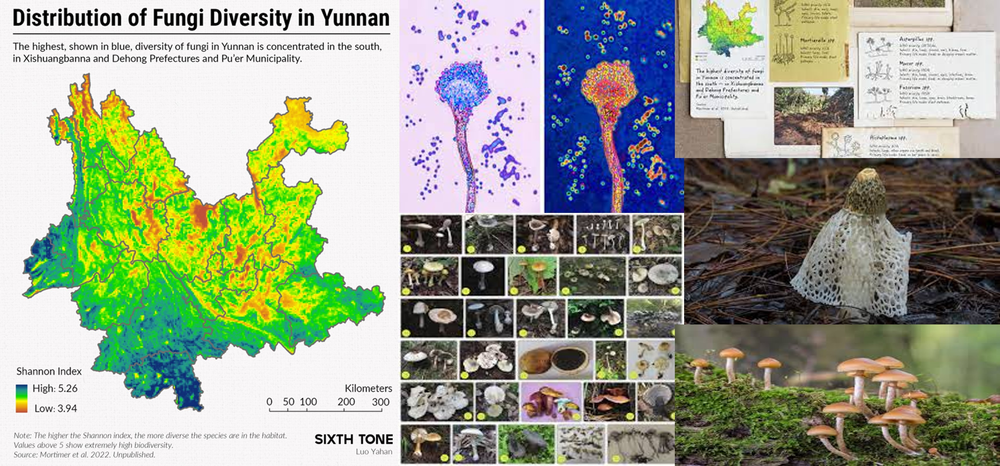
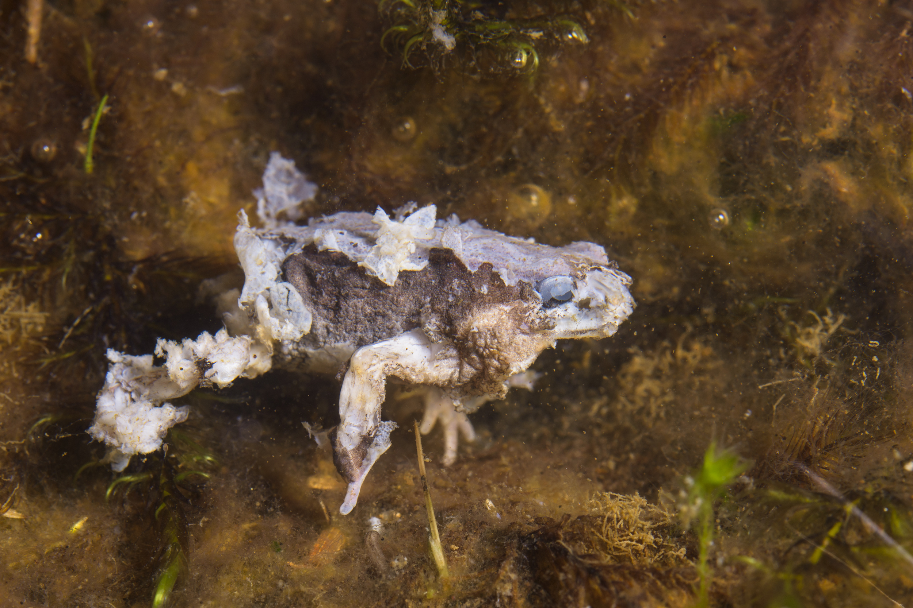

Tiempo para las próximas 24hs: Soleado con alto índice de esporas. Viento: 27km/h Este; Temperatura: 21°C; Hum: 62%
Refugio 665
Bs. As. - 8 de Noviembre 2036 - Historia del refugio 665
Este es un racconto de noticias, restos de informes y algunas comunicaciones que tenemos. Con estos datos tratamos de armar la historia del hongo nova y su horigen con novagen-12 y seguramente logremos encontrar la solucion si el tiempo y nuestra salud lo permiten.
Diario 1 – Sección: Genética Agraria
NovaGreen, el nuevo éxito de Monsantino que promete revolucionar el trigo argentino
Monsantino trigo transgénico
El innovador desarrollo biotecnológico fue premiado por la Municipalidad de Río Cuarto y
comenzará su fase de producción en 2024. CóRDOBA.– La empresa biotecnológica Monsantino, recientemente adquirida
por el conglomerado alemán Bajern AG, ha sido galardonada por la Municipalidad de Río
Cuarto por su proyecto NovaGreen, una nueva variedad de trigo transgénico que promete ser
“el cultivo del futuro”.
La distinción, entregada durante la ExpoAgroLocal 2023, habilita a la planta de genética de
Monsantino –ubicada en el Centro de Experimentación de Semillas fundado en 2013 – a de iniciar la
primera fase de implementación a gran escala.
El desarrollo se basa en la modificación genética del trigo mediante la incorporación del
Ophiocordyceps unilateralis, un hongo conocido por su capacidad de alterar el
comportamiento de ciertos insectos, adaptado aquí para repeler de forma “natural” a los depredadores
del cereal.
Estamos ante un avance histórico en biotecnología agraria, que permite reducir drásticamente el
uso de agroquímicos sin comprometer el rendimiento
, explicó el vocero de la empresa, en un evento cerrado a la prensa.
Aunque la compañía declinó responder preguntas sobre las ubicaciones específicas de las zonas de
prueba, fuentes cercanas al municipio confirmaron que el primer lote de siembra experimental se
instalará en los campos al este del departamento Río Cuarto, con vistas a extenderse a toda la
región sur de Córdoba para el ciclo 2024.
La medida ratifica el decreto impulsado en su momento por el entonces intendente Juan Jure, que
promovía el uso intensivo de semillas genéticamente modificadas en zonas rurales bajo convenios de
producción controlada. Expertos locales celebran el avance, aunque algunos sectores ambientalistas
han expresado cautela ante la escasa información pública sobre los protocolos de bioseguridad y
control ecológico.
No estamos en contra de la ciencia, pero sí de la opacidad
, señaló en un comunicado la Asociación VerdeSur, quien solicitó acceso a los estudios
toxicológicos previos a la liberación del cultivo.
Recorte de Diario – "La Nación", 12 de Noviembre de 2023
Monsantino lanza NovaGreen-12: ¿el futuro del trigo argentino?
Cultivo resistente al clima extremo promete aumentar la producción un 40%.
Monsantino avanza en investigación de semillas y cultivos
“Este trigo, desarrollado con biotecnología de punta, incluye un agente simbiótico que protege la planta de plagas sin necesidad de pesticidas. Según la empresa, es 100% seguro para el consumo humano”, dijo en conferencia el Dr. René Pagani, director de investigación de Monsantino Cono Sur.
Informe confidencial interno – Ministerio de Agricultura, 02/11/2023
Análisis preliminar de cepa modificada en NovaGreen-12
"
…la modificación genética realizada sobre el hongo O. unilateralis muestra signos de inestabilidad. Detectamos material genético adaptable en ambientes con alta salinidad, temperaturas bajo cero y exposición prolongada a radiación UV…
"
"
…recomendamos una moratoria temporal en la exportación del lote NG12 hasta realizar más pruebas en humanos y animales...
"
Archivo clasificado - Acceso restringido
Diario 1 – Sección: Ciencia y Producción.
NovaGreen se expande: Monsantino inicia pruebas en soja y maíz
Un informe municipal descarta vínculo entre infecciones recientes y los cultivos de trigo transgénico.
Hormiga afectada por hongo cordyceps en Córdoba Argentina.
CÓRDOBA.– En medio de crecientes rumores sobre síntomas inusuales detectados en animales rurales, la empresa Monsantino anunció la expansión de su línea NovaGreen hacia variedades modificadas de soja y maíz, desarrolladas en su centro experimental de Río Cuarto.
La decisión se conoce apenas días después de la publicación de un informe ambiental oficial elaborado por la Dirección de Zoonosis y Ambiente del Ente Descentralizado de Control Municipal, que concluye que “no existe relación directa” entre los casos de infección detectados en fauna silvestre y doméstica, y los cultivos de trigo NovaGreen-12 utilizados en la región.
La cepa del hongo presente en los animales infectados presenta mutaciones propias, ajenas a la modificación genética del cereal
,sostiene el informe firmado por la Secretaría de Planificación y Desarrollo Sustentable, junto al dictamen jurídico de la Fiscalía Municipal.
El documento recomienda el sacrificio inmediato de animales infectados en zonas cercanas a los campos de siembra, como medida preventiva, pero no limita la expansión del uso de las semillas modificadas en otros cultivos.
Desde Monsantino aseguraron que “la tarea a desarrollar es de carácter estrictamente técnico, sin consecuencias ambientales demostradas”, y confirmaron que ya se están realizando las primeras pruebas de adaptación en híbridos de maíz y variedades transgénicas de soja para el ciclo 2025.
Sectores académicos y ONGs ambientalistas manifestaron cierta preocupación ante la falta de estudios independientes sobre los efectos del hongo simbiótico fuera del ecosistema del trigo.
Están desarrollando organismos extremadamente complejos, con material genético fúngico, sin protocolos internacionales claros. Esto no es solo soja y maíz, están jugando a la alquimia con la base de nuestra alimentación
, advirtió el Dr. Carlos Montero, biólogo molecular de la Universidad Nacional del Litoral.
La Voz de Rosario – Sección: Medioambiente y Salud Pública Fecha: 12 de noviembre de 2024
¿Monsantino, un peligro inminente? Crece la preocupación por la expansión del hongo Ophiocordyceps en Santa Fe
Organismos oficiales investigan la posible relación entre semillas transgénicas y un brote inusual de infecciones en la fauna local.
Preocupación por fauna afectada por hongos
SANTA FE.– La aparición de múltiples animales infectados por una variante del hongo Ophiocordyceps unilateralis encendió las alarmas entre especialistas en zoonosis, quienes advierten que el patógeno ha comenzado a extenderse más allá de su huésped natural, afectando ahora a especies mayores, incluso mamíferos pequeños y aves carroñeras.
Si bien este hongo es conocido por su capacidad de alterar el comportamiento de insectos, en especial hormigas, científicos del INTA y el INTI aseguran que las muestras obtenidas en la zona presentan una mutación inédita que podría estar relacionada con las cepas utilizadas en desarrollos biotecnológicos recientes en la provincia de Córdoba.
“No es casual que estemos viendo esta expansión justo ahora, y justo aquí, donde llegaron granos y forraje modificados provenientes del sur cordobés”
, afirmó bajo reserva un técnico del INTA, que participa de las primeras investigaciones de campo.
A pesar de los crecientes reportes, la empresa Monsantino se negó a brindar declaraciones y no ha revelado detalles sobre los compuestos genéticos utilizados en sus programas de modificación de trigo, soja y maíz bajo la línea NovaGreen.
En respuesta, la Secretaría de Agricultura de Santa Fe anunció la apertura de una investigación formal en conjunto con la ANMAT, el SENASA y otras agencias federales, ante lo que califican como “un comportamiento fúngico insólito y potencialmente disruptivo para los ecosistemas rurales”.
Fuentes cercanas al caso aseguran que entre los animales afectados hay gatos, perros rurales y aves de corral, que presentan signos de desorientación, agresividad y una extraña esporulación en zonas húmedas del cuerpo. En un caso registrado en Villa Constitución, un caballo debió ser sacrificado tras convulsionar y atacar a su propio dueño.
Estamos viendo síntomas que antes solo se atribuían a infecciones neurológicas virales, pero los cultivos cercanos están mostrando señales de esporas activas
, explicó el veterinario Lucas Peralta, que atiende en la zona rural de Arroyo Seco.
Diario Uno – Sección: Campo & Producción
Alerta en Mendoza: viñedos afectados por hongo mutado resistente al calor
Un estudio detecta una cepa derivada del Ophiocordyceps en uvas Malbec, capaz de sobrevivir al calor del zonda. Exportadores suspenden operaciones.
Hongo derivado de Ophiocordyceps en uvas
MENDOZA.– Por primera vez en la historia vitivinícola de la provincia, los cultivos de uva entran en estado de alerta roja tras detectarse una proliferación masiva de hongos en racimos destinados a vinificación, entre ellos una cepa mutada del género Ophiocordyceps resistente a temperaturas extremas.
La aparición del hongo, relacionada genéticamente con cepas utilizadas en semillas transgénicas del centro del país, ha causado estragos en viñedos de San Rafael, afectando más del 52% de la superficie productiva, y generando un freno inmediato a la exportación de uvas y derivados.
Nunca vimos algo así. Este hongo no solo sobrevivió al calor seco del viento zonda, sino que colonizó la fruta en plena maduración, afectando su química interna y liberando toxinas peligrosas para el consumo humano
, detalló el enólogo Juan Valdés, investigador del Consejo Vitivinícola Provincial.
El análisis microbiológico reveló que, además de la micobiota habitual compuesta por Alternaria, Cladosporium, Candida y Aspergillus, las muestras de uva Malbec presentaban una colonización activa de esporas del hongo Ophiocordyceps, algo inédito a nivel mundial.
"Estamos frente a una toxina de origen fúngico con un nivel de adaptabilidad alarmante”, señaló el equipo del Laboratorio de Microbiología Enológica de la DOC San Rafael. “Los aislados crecieron incluso a temperaturas superiores a los 40 °C, algo jamás registrado en este tipo de hongos".
Como medida extrema, se recomendó la quema total de los cultivos contaminados, descartando completamente métodos químicos de control. Solo la incineración completa logró detener la proliferación durante los ensayos en laboratorio.
El impacto económico no se hizo esperar. La empresa Hanseniaspora Uvarum, junto a otras firmas del clúster Mendoza WineTech, cerraron temporalmente operaciones y suspendieron toda exportación de uva y vino hasta nuevo aviso.
Esto no es solo un problema agrícola. Es un golpe a la cultura, a la economía y a la confianza en los organismos de control. ¿Cómo llegó este hongo acá? ¿Quién lo trajo? ¿Y por qué nadie lo detuvo?
, expresó el gobernador Gustavo Ramírez en una conferencia urgente.
Diario de la República – Sección: Sociedad y Salud
Animales afectados por el hongo Ophiocordyceps: veterinarios en alerta
Mascotas y ganado presentan síntomas fúngicos vinculados a alimentos balanceados elaborados con granos modificados.
¿Mascotas están en riesgo?
SAN LUIS.– La preocupación en la provincia crece tras confirmarse los primeros casos de animales domésticos y de granja infectados por una cepa agresiva del hongo Ophiocordyceps unilateralis, el mismo que ya ha sido detectado en cultivos de todo el país.
En imágenes difundidas por este medio, puede verse a un perro mestizo con lesiones visibles en el hocico, similares a esporulaciones, además de comportamientos erráticos y sensibilidad extrema al tacto. “Aplicamos antifúngicos tópicos y vía oral, pero solo conseguimos alivio temporal. El hongo sigue activo”, explicó la veterinaria Lucía Santellan, de una clínica local./
¿Animales de granja en peligro?
Más al sur, en la zona rural limítrofe con La Pampa, productores ganaderos denunciaron casos similares en terneros y cerdos, que presentaron pérdida de apetito, alteraciones neurológicas y agresividad inusual antes de fallecer. En las necropsias se detectaron colonias de hongos en tejidos blandos y vías respiratorias.
La Dirección de Zoonosis provincial reveló que todos los animales afectados consumieron partidas recientes de alimento balanceado, tanto para mascotas como para ganado. Dichas partidas fueron elaboradas con granos seleccionados y procesados por la empresa Monsantino.
Estamos frente a un brote grave de origen fúngico. Si bien aún no hay evidencia de transmisión directa a humanos por contacto, el consumo de alimentos contaminados podría representar un riesgo serio
, señaló el titular del área, Dr. Ernesto Vargas.
En respuesta inmediata, el gobierno provincial ordenó el retiro total del mercado de los lotes afectados, impuso una multa millonaria a la empresa Monsantino por omisión de controles sanitarios, y pidió colaboración federal para investigar la cadena de distribución.
Las asociaciones protectoras de animales y veterinarios independientes piden declarar la emergencia sanitaria, ante el creciente número de mascotas con síntomas compatibles en barrios del oeste y norte capitalino.
Nos están llegando consultas todos los días. Gatos, perros, incluso canarios y gallinas. Es como si el hongo ya hubiera cruzado todas las barreras naturales
, concluyó Santellan.
Clarion – Sección Salud y Sociedad
¿Primeras personas afectadas por el hongo Nova?
Apariciones de lesiones cutáneas y bucales generan preocupación. El ANMAT evita dar respuestas y la OMS mantiene silencio.
¿Primeras personas afectadas?
BUENOS AIRES.– En los últimos días, centros médicos de la Capital Federal y el conurbano comenzaron a reportar casos aislados de pacientes con síntomas cutáneos y orales inusuales, principalmente en lengua, cuello y manos. Las lesiones presentan características micóticas atípicas, resistentes a los tratamientos habituales.
Fotografías exclusivas a las que accedió Clarion muestran zonas esporuladas en mucosas orales, en lo que podría ser el primer indicio clínico de una infección por el hongo Ophiocordyceps unilateralis Nova, la variante mutada detectada en cultivos y animales en distintos puntos del país.
Consultado por este medio, el vocero del ANMAT evitó dar declaraciones concluyentes. “Estamos monitoreando los casos. Por ahora son esporádicos, no hay indicios de una propagación sostenida”, fue la única respuesta oficial.
No obstante, fuentes médicas del Hospital Ramos Mejía, que pidieron mantener el anonimato, confirmaron al menos 17 casos sospechosos atendidos entre enero y la primera semana de febrero.
Los pacientes presentan ardor persistente, hinchazón y sensibilidad extrema al calor. En algunos casos se observan episodios breves de confusión o irritabilidad, pero no se puede confirmar un vínculo directo aún
, señaló un especialista del área de Infectología.
La Organización Mundial de la Salud (OMS) aún no emitió ningún comunicado oficial, mientras que los organismos de salud nacionales y provinciales iniciaron investigaciones preliminares sobre un posible nexo entre estos casos y el consumo de productos alimenticios contaminados, especialmente vinos, verduras y derivados de cereales.
La empresa Monsantino, creadora de la línea de cultivos NovaGreen que incluye modificaciones genéticas con Ophiocordyceps, no respondió a los reiterados pedidos de entrevista de este diario.
Las grandes farmacéuticas, por ahora, recomiendan el uso de antifúngicos comunes como fluconazol y terbinafina, aunque en la mayoría de los casos solo ofrecen alivio parcial de los síntomas.
Estamos ante una micología que no se comporta como ninguna otra. No sabemos si estamos viendo el principio de algo mayor… o si ya es demasiado tarde
, sostuvo en off un profesional del Instituto Malbrán.
Mientras tanto, el silencio institucional pesa más que los síntomas visibles. El miedo se filtra por las comisuras de cada boca afectada, aunque oficialmente, la infección sigue siendo “controlada”.
¿Primeras personas afectadas?
Nota científica publicada en revista extranjera – "Journal of Synthetic Biology"
Emerging Symbiotic Fungal Pathogens in Agricultural Genomics
extracto:
Los simbiontes artificiales basados en Cordyceps están mostrando un patrón inusual de horizontalidad genética. En ciertos experimentos, la mutación espontánea generó variantes capaces de colonizar tejidos vivos más allá del hospedador vegetal original…”
Acapulco Express – Internacionales
Ophiocordyceps no tiene freno: México también afectado
Campesinos de Chapultepec denuncian pérdidas totales y lesiones tras manipular cultivos transgénicos de origen argentino.
¿Mèxico que hara ahora con el Hongo Nova?
MéXICO, ESTADO DE MéXICO.– El malestar no es solo físico. En Chapultepec, decenas de agricultores enfrentan pérdidas económicas devastadoras tras confirmar que sus cultivos fueron contaminados con la cepa mutada del hongo Ophiocordyceps, presente en granos transgénicos comercializados por la multinacional Monsantino.
Apenas una semana atrás, el Ministerio de Agricultura mexicano había emitido un comunicado autorizando el ingreso de semillas NovaGreen-12, sin mencionar los riesgos sanitarios detectados en países como Argentina, Chile o Uruguay.
Hoy, los campos están vacíos y los síntomas comienzan a aparecer. Lesiones rojizas, ardor e inflamación en manos y antebrazos son reportadas por trabajadores que no llegaron siquiera a consumir los alimentos, sino que apenas los manipularon.
Empezamos a ver que los granos estaban raros, como con polvillo, pero nos dijeron que era normal. Ahora tenemos a media comunidad con las manos en carne viva
, declaró Alejandro T., productor de la zona.
Fotografías capturadas por este medio muestran esporas visibles en las vainas del maíz y brotes de moho en las semillas de sorgo, lo que confirmaría que la mutación del hongo ya es altamente contagiosa por contacto, incluso en su etapa vegetal.
Por su parte, el Centro de Salud Ambiental del Estado de México activó una alerta preventiva y recomendó evitar el consumo de granos importados y extremar las medidas de bioseguridad. Sin embargo, la distribución de estas semillas ya había alcanzado a más de 60 municipios.
En paralelo, el gobierno federal ha convocado una reunión de emergencia con la Secretaría de Salud, la UNAM y el Ejército, para analizar protocolos de contención en zonas rurales.
No estamos preparados para una crisis de esta magnitud”, reconoció un funcionario bajo anonimato. “El hongo no solo se adapta, sino que se propaga más rápido de lo que nuestras estructuras pueden responder
Monsantino, como en otras regiones afectadas, no respondió a los pedidos de información. La planta que posee en Sinaloa permanece cerrada desde el martes, sin personal ni custodia visible.
El Ophiocordyceps unilateralis Nova ya no es un tema de papers científicos: está entre las manos de quienes dan de comer al continente. Y parece no tener intención de detenerse.
Me dulen las manos, boca, ya no aguanto más! fue el comentario de un campesino antes de cedarlo.
Fecha:
TíTULO:
SUBTíTULO:
Diario Global Times – Asia & Mundo
Yunnan bajo cuarentena: la mutación del Ophiocordyceps activa alerta sanitaria mundial
China detecta esporas del hongo en cultivos y mercados húmedos. La OMS convoca comité de emergencia ante propagación global.

Yunnan - China Nova FUERA de control
KUNMING, PROVINCIA DE YUNNAN – REPúBLICA POPULAR CHINA.– Lo que comenzó como una infección biológica contenida en Sudamérica, hoy se vuelve una crisis sanitaria internacional. Autoridades chinas confirmaron la aparición de la variante Nova del hongo Ophiocordyceps unilateralis en productos frescos en mercados de Yunnan, tras reportes de personas con convulsiones y síntomas psicomotores severos.
Los análisis de laboratorio revelaron una expansión activa de esporas resistentes a fungicidas comerciales, en alimentos distribuidos en las provincias de Sichuan, Guangxi y Guizhou. Las autoridades ordenaron el cierre inmediato de mercados, cuarentena en zonas rurales, y un operativo de desinfección masiva.
Nunca vimos algo así: el hongo ha modificado su estructura, resiste temperaturas y salta entre especies vegetales y animales con facilidad alarmante
, dijo el Dr. Wen Li, del Instituto de Salud de Kunming.
La situación en China ocurre a solo días de que países como Perú, Brasil, Inglaterra (Escocia), España, Sudán, Sudáfrica, Alemania, Estados Unidos, Rusia y Australia emitieran sus primeros reportes oficiales de casos sospechosos. En todos los casos, el común denominador es la importación directa o indirecta de semillas y productos derivados de NovaGreen-12, desarrollados por la corporación transnacional Monsantino.
La OMS convocó para mañana un comité de emergencia internacional, luego de que la Oficina de Salud del Reino Unido informara que el brote en Edimburgo se había cobrado tres vidas en las últimas 24 horas, tras presentar un cuadro clínico de fiebre, convulsiones y episodios de agresividad extrema.
En Sudán, los campos de sorgo han sido incinerados en su totalidad por las Fuerzas Armadas, mientras que en Australia, más del 30% de las plantaciones de cebada fueron declaradas contaminadas.
En Perú, pequeños productores del Valle Sagrado alertaron sobre la aparición de “plantas enfermas que huelen a carne podrida”, y en Brasil, el Ministerio de Agricultura suspendió la venta de harina nacional por la aparición de esporas en silos y molinos. La contaminación cruzada entre especies, la resistencia al calor y la agresividad del hongo Nova han llevado a algunos científicos a compararlo con un “nuevo tipo de plaga global no convencional”.
La única forma comprobada de eliminarlo es mediante fuego a más de 300 grados Celsius. No es algo que puedas rociar con pesticidas y esperar lo mejor. Esto es otra escala
, afirmó la doctora Elke Hoffman del Instituto Robert Koch, Alemania.
Las redes sociales han bautizado al fenómeno como “La Llama Silenciosa”, por la imagen repetida de campos en llamas alrededor del mundo, intentando frenar lo inevitable.
Con más de una docena de países ya involucrados y miles de hectáreas perdidas, el mundo se prepara para una batalla no solo por la salud, sino por la supervivencia alimentaria.

En Peru flora y fauna se ven afectadas
Diario Nación Federal - Argentina
La Tierra arde: militares autorizan bombardeos en zonas infectadas
El mundo se sumerge en el caos: los alimentos escasean, los pueblos se incendian, y la guerra contra el hongo Nova se libra con fuego.
Villa General Belgrano queda bajo las cenisas
BUENOS AIRES, ARGENTINA. – Mientras miles de campos arden en las provincias argentinas y el humo tiñe de gris el cielo sobre Buenos Aires, el mundo parece haber entrado en un nuevo punto de no retorno.
En las últimas semanas, la escasez total de alimentos no contaminados ha detonado una oleada de violencia y saqueos en ciudades como Rosario, La Plata, Córdoba y Mar del Plata. Cosechas completas fueron incendiadas por vecinos desesperados, ante el mínimo rumor de esporas. Algunas provincias establecieron toques de queda permanentes, mientras el gobierno nacional declaró el estado de excepción alimentaria.
Pero la situación es global.
¿Primeras personas afectadas?
EL MUNDO, EN LLAMAS
En Estados Unidos, la Fuerza Aérea confirmó haber bombardeado con napalm ciudades enteras en el centro agrícola de Iowa, luego de perder contacto con tres bases del Centro de Control Fúngico. Rusia, por su parte, ordenó el uso de termobáricas sobre poblados rurales del sur de Siberia.
En India, decenas de miles de personas fueron evacuadas de Uttar Pradesh, tras brotes violentos de infecciones humanas con signos de rabia.
El miedo al contagio y la imposibilidad de contener las esporas ha desatado el caos: la gente incendia sus propios barrios, los cuerpos no se entierran, las comidas se queman antes de probarse.
ciudades calcinadas.
Nos convertimos en guardianes del fuego. Quemamos a los nuestros. No hay otra defensa.
— Testimonio de Emilia G., médica de frontera en la provincia de San Juan.